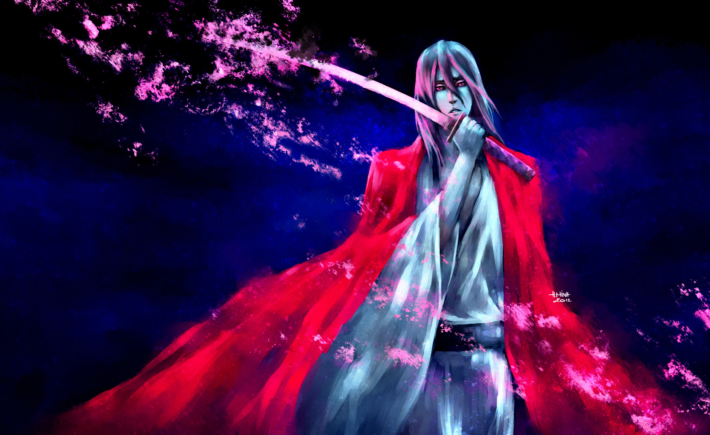
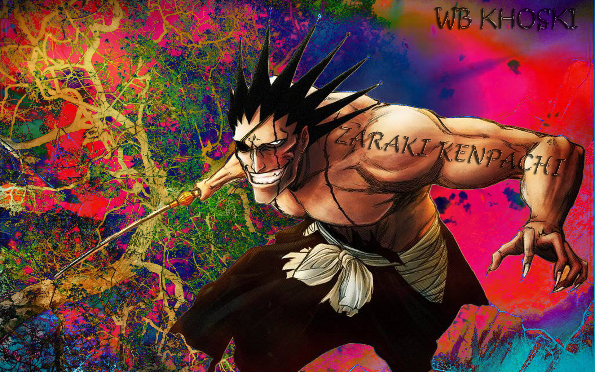
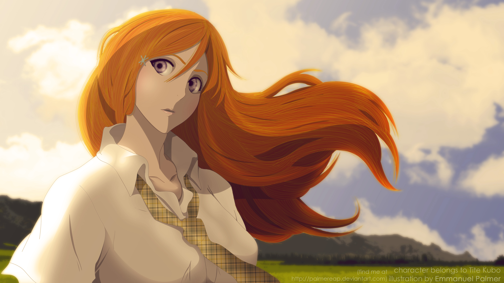
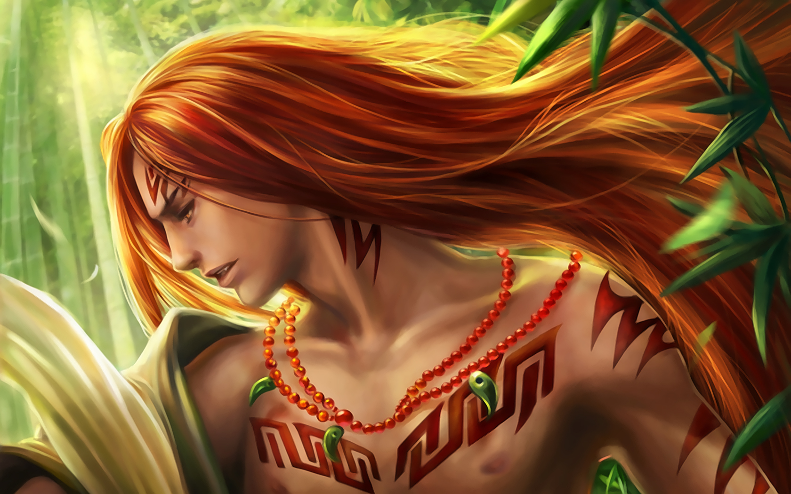
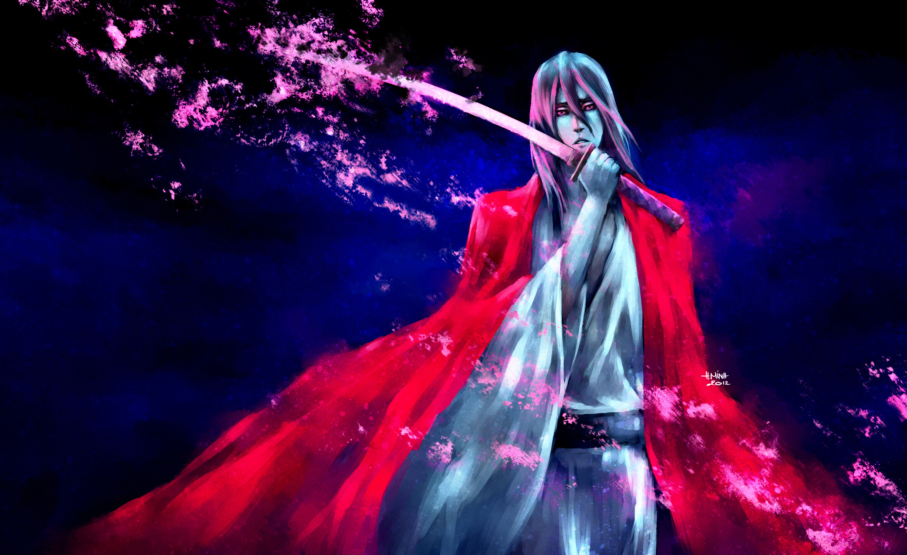
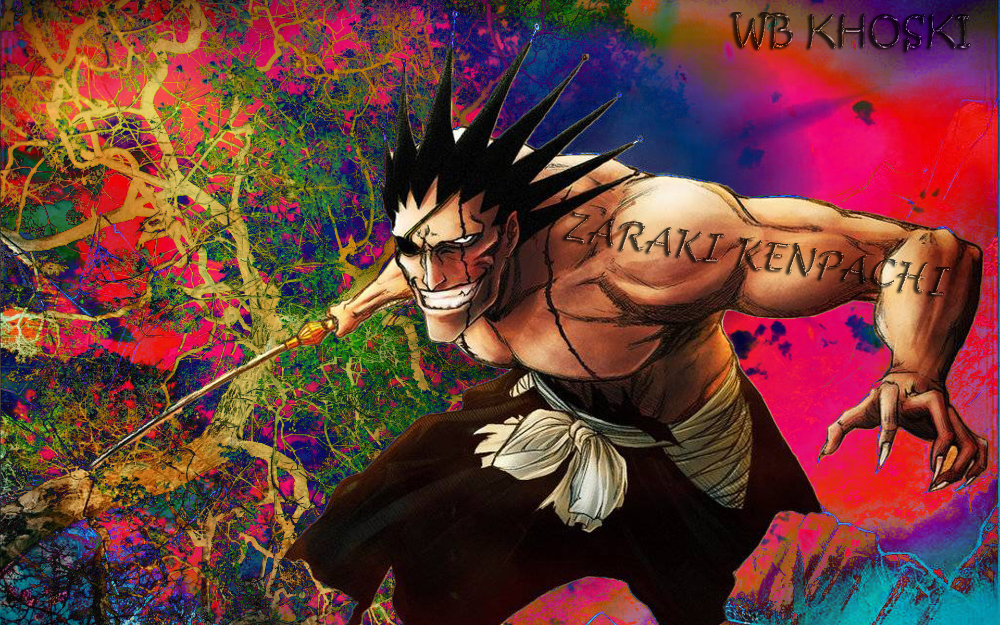
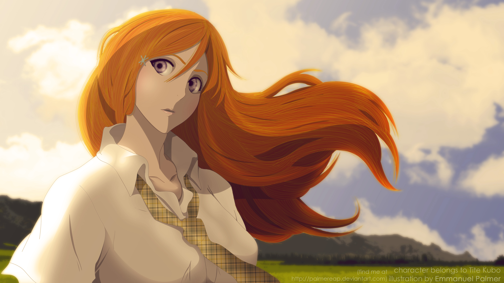
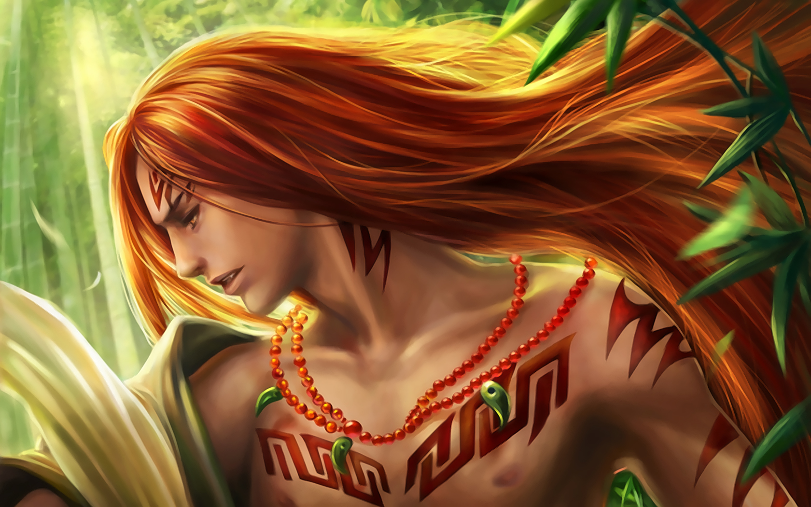
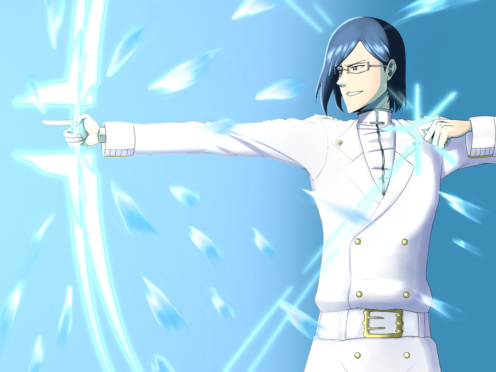
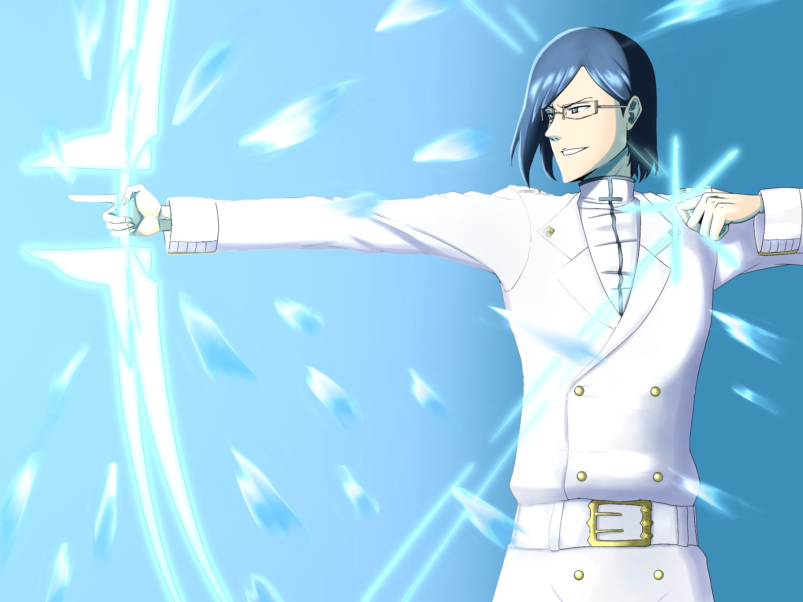

Ichigo
Ichigo Kurosaki, o icônico protagonista de "Bleach", é um destemido guerreiro com habilidades espirituais excepcionais. Sua vida comum sofre uma reviravolta quando ele obtém poderes de Ceifeiro de Almas. Além de sua personalidade corajosa, Ichigo é conhecido por sua determinação em proteger seus entes queridos e pelo desenvolvimento de suas habilidades espirituais.
Ele enfrenta ameaças sobrenaturais, luta contra seres malignos conhecidos como Hollows e protege o equilíbrio entre o mundo espiritual e o mundo humano. Ao longo de sua jornada, Ichigo forma laços profundos com outros Ceifeiros de Almas e descobre segredos sobre sua própria linhagem espiritual, tornando-se uma figura lendária no universo de "Bleach".
 









 
